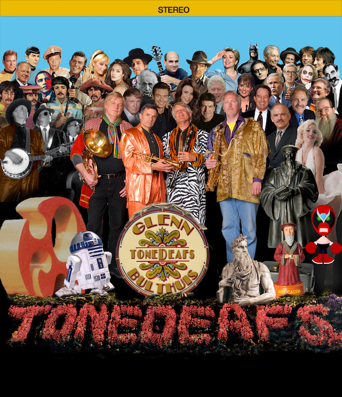

Gigs and News

August 1, September 5, and October 3.
Swing Dance Nights with the Hark Up Horns.
A 17-piece band plays for Swing Dances that will meet on the first Tuesday of every month throughout the summer at Rosa Parks Circle in Grand Rapids.
Starting at 7:00 p.m.
Saturday, September 16, 2017 7:30 p.m.
Glenn Bulthuis and the Tonedeafs
Play the entire "Sgt. Pepper's Lonely Hearts Club Band" album live on stage.
Along with 15 additional Beatles Classics.
An 11- piece band recreates a total of 28 Beatles Classics
Van Singel Fine Arts Center - 84th Street & Burlingame S.W., 1.5 miles west of US-131
Tickets on Sale Now!!!
$ 18.50 Adults - $ 12.50 Students and Children
Call 878-6800 for tickets or buy tickets on line at: www.vsfac.com
Brought to you by the Van Singel Fine Arts Center in Byron Center, Michigan
A splendid time is guaranteed for all.

Over the past 40 years Glenn has performed in concerts across the U.S. For 35 years he performed annual concerts at Calvin College’s Fine Arts Center. In more recent years he and his band have performed at the Van Singel Fine Arts Center in Byron Center. Other venues include: DeVos Place, the Van Andel Arena, 5th /3rd Ball Park and the Los Angeles Community Church.
We will post upcoming concerts and club dates as they are formalized.
If you’d like Glenn and/or his group to perform for your next event, let us know.
Contact Glenn at glennbulthuis@comcast.net